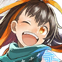
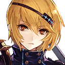

|
 |

Almira |
Vettel, we found it! |

Vettel |
Ah, great. I've overturned him once, but he may be coming back any time now. He's possessed by some kind of terrifying power. |

Yomi |
The picture on this document shows the same pattern that Gormalas is wearing... |

Caris |
Go ahead and try reading it. |
Vettel |
Ah. |
Vettel |
I see... |
Vettel |
The loincloth that this tribe wore is similar to the fearless one that Dilga wore last time, but... |
Vettel |
The other more vicious loincloth is exactly the same as the one that Gormalas is wearing! |

Teona |
When I asked at the library, they said that the white loincloth belonged to the De tribe and the red loincloth belonged to the Go tribe. |

Mielikki |
That's the same thing to what the old man said! |
Vettel |
Hmm. The De tribe protects their people with a powerful physique...thus they were called the Tight Tribe... |
Vettel |
On the other hand, the Go tribe toughened their body in order strike down their enemy. Thus they were called the Hit Tribe... |
Teona |
When the time came for the Festive Battle, the De tribe and the Go tribe fought for control. |
Teona |
It was held when the sea was at its fullest. The ritual commenced at the start of dawn. |
Teona |
I wonder what kind of battle it was! I'm really fascinated! |
Caris |
Teona, are you attracted to muscular bodies? |
Teona |
Yes! As a fighter, I'm really interested in the beauty of the well-trained body! |

Glanz |
... ... |
Yomi |
... ... |

Rin |
By the way, what was the ritual like? I don't get to see that book at all! |
Vettel |
Apparently, both sides cleansed their loincloths. |
Mielikki |
Cleansed them how...? |
Teona |
It doesn't say that much. |
Vettel |
I wonder if there's any more information. |
Teona |
Um, I think on page 69...it says what happens afterward. |
Vettel |
Let me see...um...the loser will obey the winner and will accept defeat while waiting for the next battle... |
Vettel |
So, this place is where each country repeatedly protected their land from the threat of the other country...using loincloths... |
Almira |
I guess with Wadatsumi close by, a loincloth culture is a given. |
Yomi |
I-I'm not sure about that... |
Vettel |
Wait, there's more! Something strange happened to the Go tribe... Most of them disappeared?! |
Rin |
Huh?! Why?! |
Vettel |
When the next Festive Battle came around, the Go tribe started fighting amongst themselves... They didn't want to wear the loincloth anymore. |
Caris |
I kind of understand where they were coming from. |
Vettel |
Thus, the De tribe managed to secure the victory of the final battle, without even having to fight. Since then, no battle has been held. |
Vettel |
As a result, the De tribe's loincloth ended up being their historical formal wear for men...and was passed down to Wadatsumi... |
Rin |
Huh? So, it didn't start at Wadatsumi, it began here! |
Almira |
That's magnificent! |
Yomi |
I-I feel like there's something wrong with describing it that way. |
Vettel |
Maybe the loincloth he's wearing belonged to the chief of the Go tribe... |
Vettel |
The grudge of the chief, having not been able to fight in battle, may be possessing Gormalas now and turning him into a demon of revenge. |
Glanz |
So now comes the crucial question: how do we get rid of the curse? |
Mielikki |
Here he comes again! |
Rin |
We need to protect the tourists! |